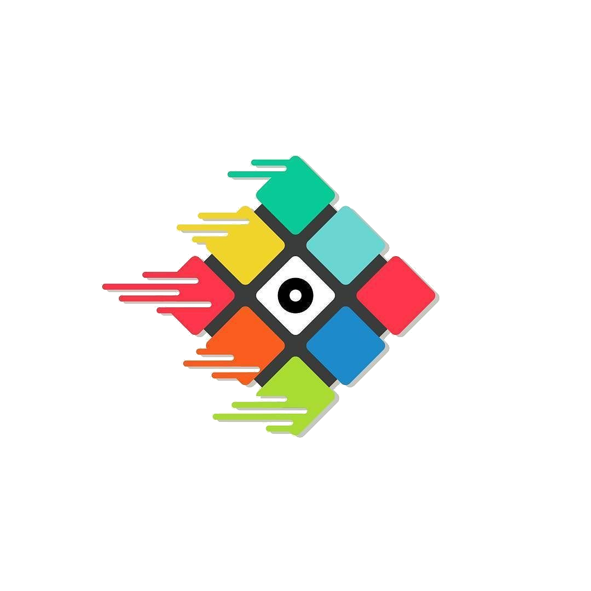

El cubo de Rubik es un rompecabezas mecánico tridimensional inventado por el escultor y profesor de arquitectura húngaro Erno Rubik en 1974.
Originalmente llamado "cubo mágico” el rompecabezas fue licenciado por Rubik para ser vendido por Ideal Toy Corp. en 1980. Ganó el premio alemán a mejor juego del año en la categoría "Mejor Rompecabezas" ese mismo año. Hasta enero de 2009 se han vendido 350 millones de cubos en todo el mundo, haciéndolo el juego de rompecabezas más vendido Es considerado, en general, el juguete más vendido del mundo.
Existen diferentes variaciones del cubo de Rubik, que llegan hasta las treinta y tres capas
, estas han ido saliendo con el pasar de los años aumentado la dificultal y el tiermpo de resolución